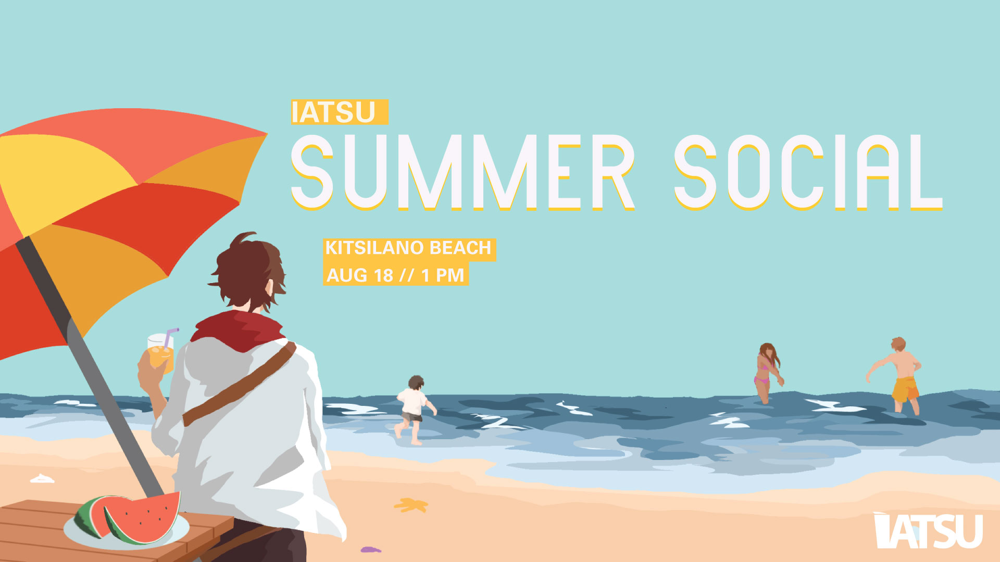
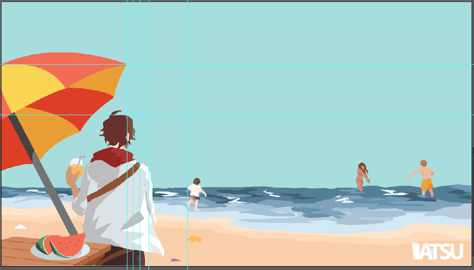

Working with our two Director of Events, I designed the official event banner for our annual Summer Social event along with various promotional material.
timeframe: roughly three weeks
This design was for a student union social event. This event was marketed as a free event for all students within the university program, everyone was encouraged to join together at the beach and get to know their peers a little better at a summer barbeque. I wanted to create a representation of what the event could look like and send an appeal of a playful environment.
Before I created a quick thumbnail, I looked at the promotional material from the previous year to see what I could take inspiration from; while the previous banner had depicted the barbeque as the focus, I wanted to focus more on atmosphere and social aspect.
Personally, I like create my illustration before laying out text as I find it easier to place elements after I have a base image. I started with a quick sketch to lay out my illustration before adding colours.
Again because I wanted to create a sunny, fun atmosphere, I decided to use warmer colours for bigger details- for instance, the boy under the umbrella. After creating the illustration, I then laid down grid lines to find “hotspots” in the illustration, I chose to practice Alexey Brodovitch’s design method in aligning text with parts of an image which stand out the most.
Finding an appropriate font for the event banner was the most difficult for me. While I wanted to maintain some sort of minimalism to match with the rest of the artwork (vector art, lineless art), I still wanted a font that didn’t appear too stiff. Another challenge I had encountered was with text colours, originally, I had set the font as a flat white over the light blue background, which appeared stiff and almost unreadable due to lack of colour contrast.
As a result of marketing the event, the Facebook event page had reached around 90 people where roughly 30 had made it to the event. The event had been successful and the activities in our itinerary was held according to schedule.